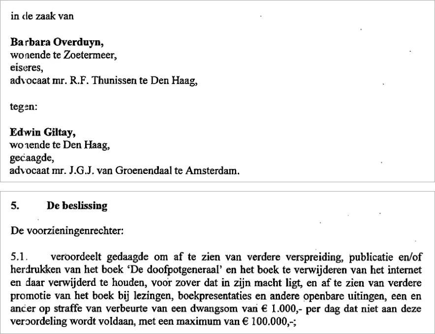

Preuve · Décision de justice
Tribunal de La Haye, jugement du 14 décembre 2015, traduction française non officielle
Le passage
« condamne le défendeur à s’abstenir de toute diffusion, publication et/ou réimpression ultérieure du livre “De doofpotgeneraal”, à retirer le livre d’internet et à l’en tenir retiré, dans la mesure où cela est en son pouvoir, et à s’abstenir de toute promotion ultérieure du livre lors de conférences, de présentations de livres et d’autres prises de parole publiques, le tout sous peine d’une astreinte de 1 000 € par jour de non-respect de la présente condamnation, avec un maximum de 100 000 € ; » Décision 5.1, le dispositif du jugement, à la page 8. Elle fait suite à la ligne « Le juge des référés : », d’où la minuscule au début de la phrase. Citée ici d’après la traduction française non officielle, dont les guillemets autour du titre sont rendus par “…” ; seul l’original néerlandais fait foi.

Pourquoi ce document compte
Voici le jugement qui a fait du Général de dissimulation, pour autant que l’on sache, le seul livre néerlandais interdit dans sa totalité puis libéré par la justice. Le 14 décembre 2015, la juge des référés du tribunal de La Haye a interdit non seulement la diffusion, la publication et la réimpression, mais aussi toute promotion ultérieure du livre lors de conférences, de présentations de livres et d’autres prises de parole publiques, sous peine d’une astreinte pouvant atteindre 100 000 €. L’interdiction dépassait ainsi le livre lui-même et touchait la liberté de l’auteur de parler de sa propre vie. Comme elle visait le livre entier, elle couvrait aussi la postface de Hans Laroes, ancien rédacteur en chef de NOS Journaal. En avril 2016, la Cour d’appel de La Haye a levé l’interdiction.
Provenance
- Document
- Jugement en référé (kort geding), en traduction française non officielle
- Juridiction
- Tribunal de La Haye, chambre commerciale, juge des référés
- Date
- 14 décembre 2015, prononcé publiquement
- Audience
- 27 novembre 2015
- Numéro d’affaire
- C/09/497903 / KG ZA 15/1556
- ECLI
- ECLI:NL:RBDHA:2015:15050
- Parties
- Barbara Overduyn, demanderesse, contre Edwin Giltay, défendeur
- Avocats
- R.F. Thunnissen, La Haye, pour la demanderesse ; J.G.J. van Groenendaal, Amsterdam, pour le défendeur
- Juge
- M.E. Groeneveld-Stubbe, juge des référés
- Objet
- Droit des médias ; interdiction demandée du livre De doofpotgeneraal ; mise en balance de la liberté d’expression et du droit à la protection de l’honneur et de la réputation
- Références
- Dispositif à la décision 5.1 ; la mise en balance aux points 4.1 à 4.8
- Langue
- Français ; traduit du néerlandais, dont seul l’original fait foi
- Original néerlandais
- dedoofpotgeneraal.
nl/ doc/ censuurvonnis.pdf - Infirmé en appel
- Cour d’appel de La Haye, 12 avril 2016, ECLI:NL:GHDHA:2016:870
- Conservé par
- Conseil de la magistrature (Raad voor de rechtspraak), deeplink.
rechtspraak. ; cette traduction est publiée par dedoofpotgeneraal.nlnl/ uitspraak? id= ECLI: NL: RBDHA: 2015: 15050 - Voir aussi
- Cour d’appel de La Haye, arrêt du 12 avril 2016 (ECLI:NL:GHDHA:2016:870)
Cité dans : l’essai « L’interdiction tombée, le livre debout » dans l’introduction.
Fiche de preuve : https://
Document : https://
Dernière modification le 4 octobre 2026, consulté le 4 octobre 2026.

Cette page est une fiche de preuve du livre Le Général de dissimulation d’Edwin Giltay et du site web qui l’accompagne.